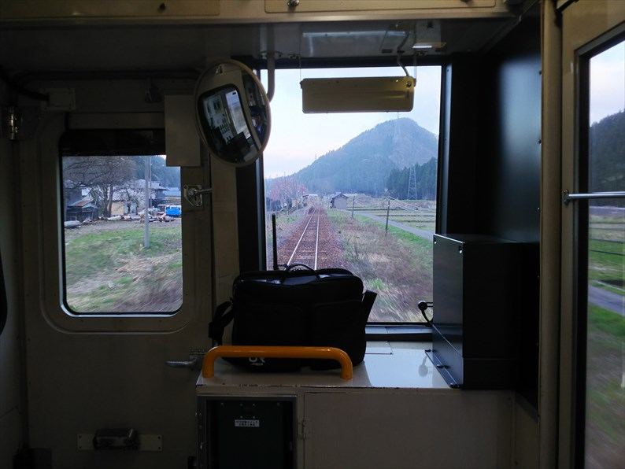
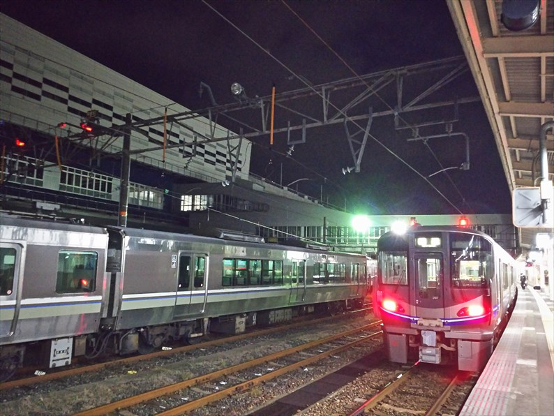

新幹線で名古屋に来ました。春休みなので、かなり
の人出です。
今回は特急しなのに乗り換え。新幹線と特急って、
なんか贅沢な旅です。
久々に松本に来たら、松本電鉄の車両が変わってま
した。元東武の車両だそうです。
ここからも、鈍行ではありません。リゾートビュー
ふるさと。ＪＲ東日本のリゾート列車です。
長野発の列車で、ここ松本で方向を変えて大糸線に
向います。
なんの写真撮っとるねん、このオタク。
指定席にど～んと座ってるのは、長野のゆるキャラのアルクマ、
だそうです。
もちろん、依田プロはご存じですよね。
いつも昼はコンビニのオニギリとかなんですが、今
回息子と一緒なので、駅弁を奮発です。
駅弁の包装紙にもアルクマが描かれてる！
いよいよ出発。
かぶりつきスペースに誰でも座れる椅子が設置され
てます。
天気も良く、蝶ケ岳や常念岳も見えてきました。
さすがに槍ヶ岳までは見えませんね。
快速なんで、あんまり停まりません。最初の停車駅
は穂高駅。

長時間停車なので、外に出てみます。
学生時代以来ですが、駅舎もキレイになってますわ。
停まる駅は少ないですが、停車時間は長めなので、
駅前に降り立てるのはありがたい。
信濃大町駅です。
さらに北に進むと、北アルプスの山が見えてきます。
大糸線の車窓の醍醐味っすね。
白馬駅前より。
北アルプスの山並みがキレイです。
終点の南小谷に到着です。
富山大学の入試終わりか、入学手続きの時に、夜遅
く、この駅の待合室でひとり列車を待ってたら結構
な地震が来たのをよく覚えてます。
地震なんて全然なかったのでビックリしましたが、
その後１０年もたたないうちにあんな大地震に見舞
われるとは想像もしませんでした。
ただ、駅舎は当時と変わってるような気がする・・・

ここからはＪＲ西日本です。車両もＪＲ西の閑散線
区向けのディーゼルカーです。
この区間も、有数の赤字路線なので、もう乗れるの
も今回が最後かも・・・
無事、糸魚川に到着。
実はこの駅、新幹線の高架下スペースがちょっとし
た鉄スポットになってます。
このＳＬ、産業用の国産最後の蒸気機関車で、糸魚
川近郊の東洋活性白土というところで昭和５７年ま
で！動いてたそうです。
子供の時、このＳＬの記事の乗ってる雑誌を見て、
雰囲気が日本っぽくなかったのが妙に印象に残って
ます


ん～、行ってみたかった・・・
レンガ車庫の一部が移築されてます。
そして高架の下には、大糸線を走っていたキハ５２
が保存されてます。
中も当時のままで、保存状態もいいです。
プラレールコーナーや、かなり大きなＮゲージのジ
オラマがあります。
ＨＯゲージのジオラマもあって、大糸線を模した本
格的なものです。
車両はシュプール号ですね。当時の時刻表みたら、
かなりの本数の夜行列車が糸魚川経由で大糸線に走
ってたんですね。岡山発なんてレアな夜行もありま
した。
さて、在来線はすでに北陸本線ではなく、えちごト
キめき鉄道となっています。
今日の目玉が停まってます。

急行越後！
いえいえ、なんちゃって急行です。
３両中、１両が元急行型車両で、ここはツアー用となってて一般客は乗れません。
乗れる残りの２両は近郊型車両を急行色に塗ったものです。
でも、オタクの心をくすぐるのか、まぁまぁの乗車率でした。
この急行４号、直江津までノンストップで、スピードもあって往年の急行を感じ
られる列車になってます。
あっという間に直江津に到着です。
ちなみに、車内では乗車記念賞証を何故か２枚くれ
ました。ものは試しに、ヤフオクに出品してみると、
な、なんと！１２００円で落札！
なぜそんな高値がついたのか、全くの謎です。
翌日の行動を考えると、このあたりで宿泊するのが
いいのですが、いいホテルがなく、上越妙高へ向か
います。
ここからも、えちごトキめき鉄道です。
おっと、これは観光列車の雪月花ですね。結構ええ
値段するんすよ、これが。
新幹線の駅が出来ると、必ず全国チェーンのビジネ
スホテルが駅前にできますよね。新幹線パワーっす
ね。
ホテルにチェックイン後、息子の撮影ダイカイにお
付き合い。
「越乃Shu＊Kura」が到着です。ほんとは直江津から
乗りたかったのですが、満席！でした。
見ての通り、キハ４０改造の観光列車です。外から
見た感じでは、座席は良かったです。
しかし寒い！
しなの鉄道の湘南色の１１５系がちょうど妙高高原
まで来てるとのことで、片道３０分かけてやって来
ました。
えちごトキめき鉄道としなの鉄道の境の駅になりま
す。
たかが１１５やで。岡山でも撮ったんとちゃうんか
い・・・と思いながらも付き合うやさしいお父さん
です。
息子は必死で撮影してました。
ギリギリまで撮ってるんで、乗り遅れんかヒヤヒヤしたわ。
さて、翌朝。
ホテルは朝食付きだったのですが、息子を誘うと新
幹線が見てから行くとのこと。ホテルの部屋から、
ちょうど新幹線の高架がよく見えたんすよね。そん
なに見たい？
で、スタートは特急しらゆき。えちごトキめき鉄道
エリアは２６０円追加で乗れます。
天気もよく、妙高山も綺麗に見えてます。
直江津では、新潟色の旧国電っぽいなんちゃって塗
装の車両が停まってました。わりとリアルな感じで
今っぽい塗装よりよっぽど良かったっす。お年寄り
は涙しながら乗るんじゃないでしょうか。
直江津駅舎。息子はあまりの駅前の寂しさに驚いて
ました。いやいや、日本海側の駅前って、こんなも
んやで～
ホームに戻ると、北越急行の車両もいてました。よ
く考えると、直江津って３社の結点なんですよね。
さて、ここからは旧北陸本線をたどります。電化区
間ですが、えちごトキめき鉄道の西端区間はディー
ゼルカーになってます。
日本海を見ながら、桜を見ながら、トンネルの中にあ
る駅を見ながら泊に到着。
会社の境はここではないのですが、運行上はここ泊で
あいの風とやま鉄道に乗換となります。
北陸本線の急行が停まるぐらいの駅って、こういう駅
舎ばっかりです。今となってはなつかしい感じがしま
す。
泊までの列車が平日やのにまぁまぁ乗ってたのでなん
でかと思ってたら、花見のようです。ここからバスに
乗って花見に行くって、大変やな。
ここから乗り換えるあいの風とやま鉄道の列車は、えちごトキめき鉄道（どっちも名前長すぎるねん！）の停まってるのと同じ線路に到着
です。いつか衝突事故おこさんか心配です。
富山に到着。とうとう整備も完了して、新生富山駅
が完成していました。３６年前とは大違いの、えら
くイメージのいい駅前になってます。
３６年前、最新だったビルも残っていて、なんとも
懐かしい気持ちです。
昼は白エビ丼にするか迷ったのですが、富山ブラッ
クに。
これが全然おいしくありません。学生当時も有名で
なかったんですから、当然といや当然ですよね。お
いしかったら学生には有名なはずですから・・・
金沢に向かいます。
さて、今日の息子の最大の目的は、懐鉄入場券を買うこと、です。去年から鉄道
１５０周年記念でＪＲ西エリアの主要駅で発売されてるこの切符、当初 息子が
全駅そろえると言い出したときは、そんなん無理やろと思ってましたが、今回の
北陸ツアーで残るは下関のみになるという、恐るべき状態です。
富山は乗り継ぎ時間があって良かったのですが、金沢は窓口に長蛇の列でピンチ
！しょうがないので私だけ先行して小松駅の入場券をゲットしました。
あと１年先なのに、案内板もすでにできてます。
新幹線開業まであと１年切ってるんですね。
さて、この列車に金沢から息子が乗ってるはず・・・。
なんとか合流できました。
福井も金沢状態で、武生の入場券をゲットするため
移動した息子と別行動になりました。ほんまＪＲ、
窓口減らしすぎじゃボケ。
でも喫茶店でゆっくり休めたので助かりました。
で、いよいよ最後の目玉の越美北線です。
思ったほど乗ってなくて、息子とボックス席を確保
出来たので大満足。
ここに限らず、今年は桜が早くて、ほぼ満開の桜を
各地で見ることが出来ました。

本数少ないのに、何度か交換がありました。

大野まではそれなりに人家のあるところを通ってます。
越前大野到着。多分ここまでは廃止されることはなく
安泰と思います。
さてここから先の区間は、どうなることやら。
もう乗るのは最後になるのかな。
終点が近づいてきました。
終点周辺は、まぁまぁ人家もありました。
終点の九頭竜湖駅に到着。
駅のそばにファミマが出来てる！
ちょうど日も暮れてきて、あとは帰るだけです。

敦賀からは奮発してサダーバードに乗換です。
あと約１年後に、ここが新幹線の終点になるとは信
じられへん・・・